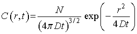
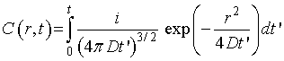

(2.9)
(2.9)一定の時間粒子を注入した場合（ランダムウォークの計算を考える），その１
ハワード・C・バーグ著の「ランダムウォーク」は非常に優れた本です．
薄い本でありながら，非常に密度の濃い本です．
その反面．．途中の計算が省かれており，そこは読者が考えなくてはなりません．
数学が専門の方は簡単だと思いますが，生命科学の人にとっては．．．ちょっとしんどいですね．
そこで，一部ですが，数式の過程を私なりに理解して記述したいと思います（間違えていたらごめんなさい）．
まずは，第2章，拡散：巨視的理論，において，p.21（日本語版），(2.9)式の導出方法を考えましょう．
(2.9)
この式は，前の式，(2.8)，の三次元拡散方程式において，長さt0の間粒子を注入したばあいの，注入中（t≦t0）における地点ｒ，時刻ｔにおける濃度の様子を示しています．

ここで，D：拡散定数，N=i dt：1秒あたりｉ個の割合で粒子が注入，ｒ：中心からの距離
これは比較的簡単で，時刻t=0からｔまでを積分すればよいのです．

次ページに進みましょう．